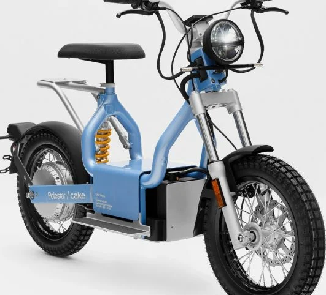
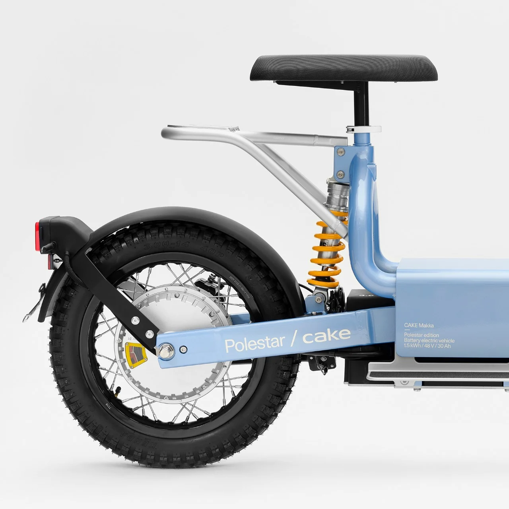

Moto elétrica Polestar, da Volvo, é a nova econômica da categoria
O projeto é um desenvolvimento da marca junto com a sueca Cake. Ela foi lançada na Europa por 5.300 euros (R$ 29 mil)
A marca de automóveis elétricos pertencente à Volvo, Polestar, lançou o seu novo modelo de moto elétrica. A CAKE Makka entra no mercado de eletrificados de baixa capacidade e consumo, ideal para deslocamento urbano e praticidade.
A moto elétrica da Polestar é a segunda apresentada pela parceria entre a Polestar e a Cake.
A CAKE Makka é equipada com um motor elétrico alimentado por uma bateria com capacidade de até 31 Ah e 1,5 kWh. Essa composição possibilita que o veículo tenha um torque de 3,6 kW e torque de 6,1 kgfm, assim ela pode atingir 45 km/h e uma autonomia de até 55 km.
Esteticamente a moto elétrica da Polestar possui um corpo bem simples. Ela tem os componentes expostos, o que facilita a visualização dos itens e uma possível manutenção.
